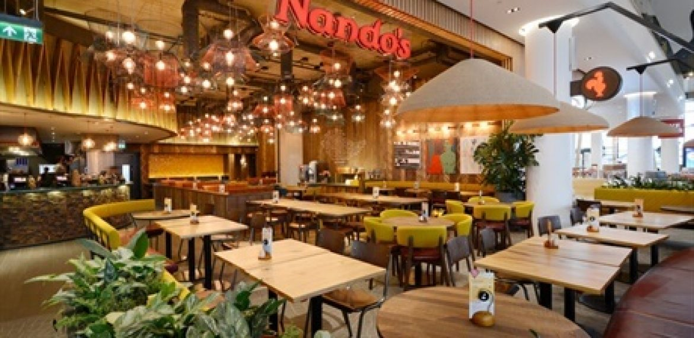
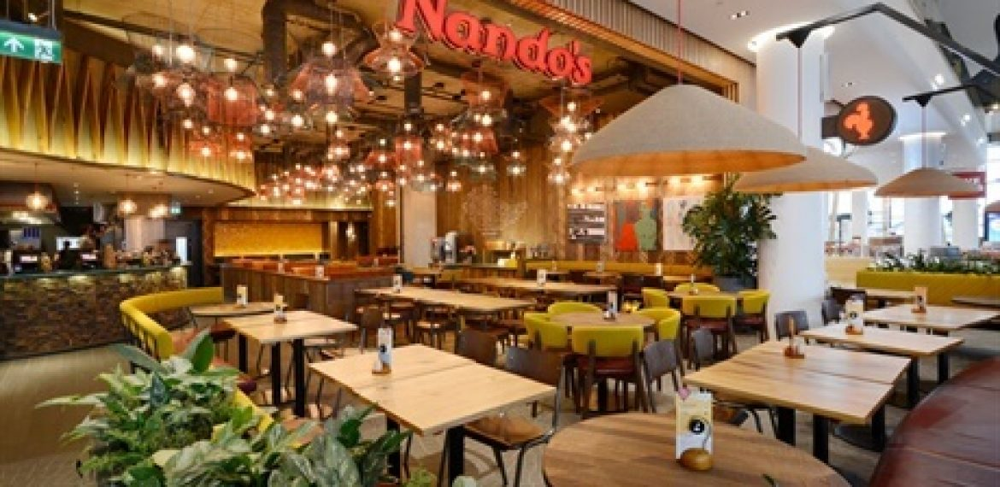

NANDOS
Nando's is a South African restaurant chain that specialises in Portuguese-African food, including its signature flame-grilled peri-peri style chicken. Founded in Johannesburg in 1987, Nando's operates over 1,000 outlets in 35 countries. Their logo is the famous Portuguese symbol, the Rooster of Barcelos.
 
